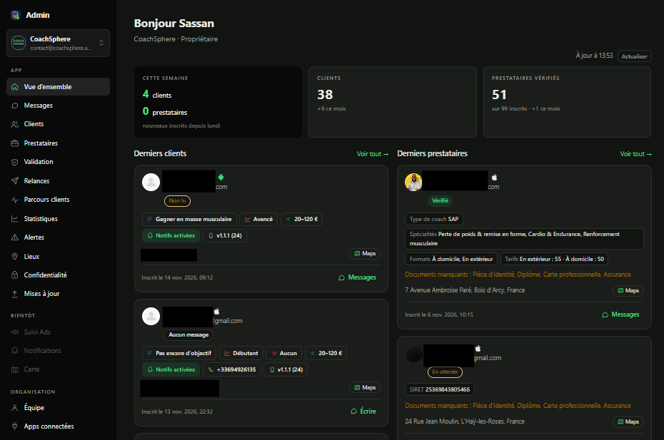

Sécurité des données
Dans un SaaS multi-tenant, une fuite entre organisations est l'erreur la plus grave. L'isolation est donc appliquée au niveau de l'API, pas seulement dans l'interface.
Le back-office et le CRM d'un SaaS utilisé par plusieurs plateformes de mise en relation. Chaque organisation gère ses équipes, ses prestataires et son support, sans jamais voir les données des autres.

Toutes les organisations partagent la même application ; chaque requête est limitée aux données de l'organisation de l'utilisateur.
Les plateformes de mise en relation ont toutes besoin des mêmes outils internes : suivre leurs utilisateurs, valider les prestataires, répondre au support. Plutôt que de les redévelopper pour chacune, un seul back-office SaaS les sert toutes.
J'interviens en full stack, de l'API Symfony jusqu'aux écrans React, avec un point d'attention constant : qu'aucune donnée ne passe d'une organisation à l'autre.
La stack du back-office
Dans un SaaS multi-tenant, une fuite entre organisations est l'erreur la plus grave. L'isolation est donc appliquée au niveau de l'API, pas seulement dans l'interface.
Les rôles doivent rester simples à comprendre pour les administrateurs de chaque organisation, tout en couvrant les besoins des équipes métier et support.
Le back-office est utilisé toute la journée par les équipes internes : il doit être rapide, clair et réduire le nombre de clics pour chaque tâche.